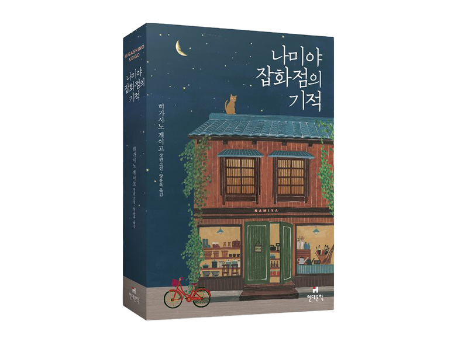

나미야 할아버지
누군가 장난처럼 던진 서툰 고민조차 생의 간절한 외침으로 귀하게 여깁니다. 차가운 새벽 공기 속에서 온밤을 꼬박 지새우며 써 내려간 그의 답장에는, 길 잃은 이들이 스스로 마음속 빈 지도를 채워갈 수 있도록 이끄는 사려 깊은 지혜와 다정한 응원이 깃들어 있습니다.
도둑질을 하고 몸을 숨긴 낡은 잡화점. 그곳의 낡은 우유 상자로 30년 전의 고민 편지가 배달됩니다. 무심코 써 내려간 답장이 타인의 인생을 바꾸고, 다시 자신의 삶을 비추는 거울이 됩니다. 현대인들의 상처받은 마음을 어루만지는 감동 미스터리의 정점입니다.

누군가 장난처럼 던진 서툰 고민조차 생의 간절한 외침으로 귀하게 여깁니다. 차가운 새벽 공기 속에서 온밤을 꼬박 지새우며 써 내려간 그의 답장에는, 길 잃은 이들이 스스로 마음속 빈 지도를 채워갈 수 있도록 이끄는 사려 깊은 지혜와 다정한 응원이 깃들어 있습니다.
한순간의 잘못으로 도망치듯 숨어든 낡은 잡화점에서, 30년의 시간을 건너온 낯선 이들의 편지를 마주합니다. 투박한 손으로 서툴게나마 진심 어린 답장을 채워가는 과정 속에서, 타인의 삶을 보듬는 선의가 결국 스스로의 일그러진 내일마저 치유하는 경이로운 순간을 맞이합니다.